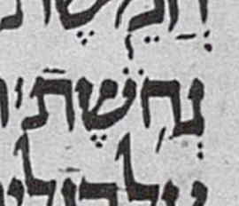
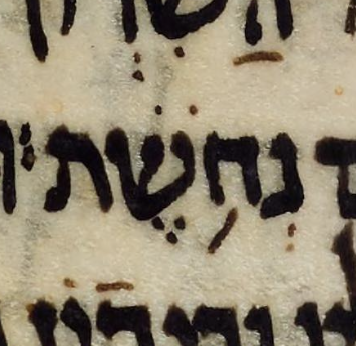
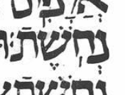

← Back to the case register.
Aleppo has no meteg after the silluq at 1 Sam. 17:5.
Leningrad has a meteg after the silluq at 1 Sam. 17:5.

Cairo has no meteg after the silluq at 1 Sam. 17:5. A stroke attached to the lamed ascender in the crop may look like a meteg, but it is part of the scribe's lamed. Ben notes that the other lameds on the manuscript page have the same feature.

Sassoon has no meteg after the silluq at 1 Sam. 17:5.

St. Petersburg EVR-II-B-55 (formerly B 247), identified in MAM by the siglum ל-א, is a manuscript of the Prophets and Writings close to the Aleppo Codex. At 1 Sam. 17:5 it has the silluq alone in this word.
